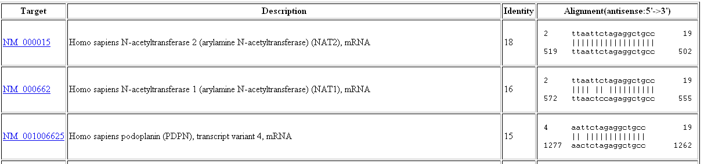

If input is 15, which means that if any BLAST hits with more than 15 identity will be considered for the filtering. An off target has to meet the following two conditions: 1. Its identity in the BLAST result table has be higher than the input (15 in this example). 2. Its GeneID has to be different from that of the target. The target GeneID, 10, is located in the top box of the result page. In order to filter an siRNA, both criteria have to be satisfied.
The program checks the above BLAST result as follow:
The first BLAST hit in the table is NM_000015. It meets the first criteria: Its identity is 18, 18 is greater than 15. This hit is ignored because it has the same GeneID as the target gene: 10. So, the program continues to check for the next BLAST hit.
The second BLAST hit in the table is NM_000662. It meets the first criteria: Its identity is 16, 16 is greater than 15. The GeneID for NM_000662 is 9 (You can find the GeneID in your GenBank flat file by clicking on the link), which is different from the target gene (10). Therefore, this siRNA is filtered out.
In the above example, the siRNA shared by both NM_000015 (NAT2) and NM_000662 (NAT1) is filtered out. If you would like to ignore NAT1, you can add 9 to the box next to GeneID in the result page as "10;9". Now the program considers GeneID 10 and 9 are the same gene.
After you update your choice to "10;9", the program checks the BLAST result as follow:
The first BLAST hit in the table is NM_000015. It meets the first criteria: Its identity is 18, 18 is greater than 15. This hit is ignored because it has the same GeneID as the target gene: 10. So, the program continues to check for the next BLAST hit.
The second BLAST hit in the table is NM_000662. It meets the first criteria: Its identity is 16, 16 is greater than 15. The GeneID for NM_000662 is 9, which is one of the target GeneIDs (9 and 10). So, the program continues to check for the next BLAST hit.
The third BLAST hit in the table is NM_182931. Because its identity 15 equals to 15 (the user's choice), it fails on this first criteria. Because the BLAST hits are sorted by identity in decreasing order, it's not necessary to check the rest of the BLAST results. Therefore, this siRNA is kept.